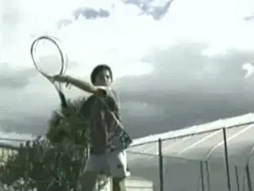
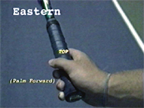
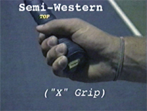
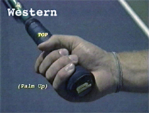
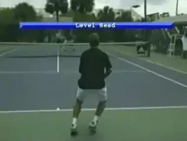
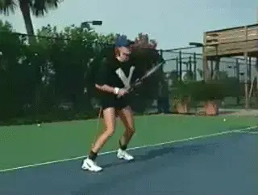
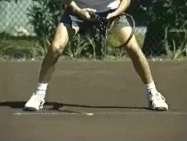
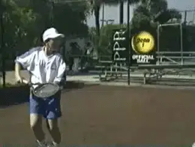
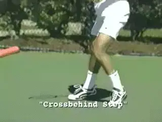

← Bài trước: The Forehand Volley | 🏠 Famous Coaches Trang chủ | Bài tiếp: → The Killer Forehand - Part 2
Cú thuận tay siêu mạnh: Phần 1
Thư viện kiến thức quần vợt thống nhất — Cơ bản, Phân tích kỹ thuật, Thư viện tham khảo và nhiều hơn nữa
Cú thuận tay siêu mạnh: Phần 1
Nick Bollettieri
Cú thuận tay siêu mạnh không chỉ là về kích thước và sức mạnh thể chất. Hãy nhìn vào cậu bé trẻ này bên phải. Hiện tại anh chỉ cao bốn feet, nhưng anh có kỹ thuật và nền tảng cơ bản phù hợp để mang lại cho anh một cú thuận tay mạnh mẽ. Vâng, anh là một cậu bé nhỏ, nhưng anh có tất cả những điều kiện cần thiết để trở thành một tay vợt có cú thuận tay siêu mạnh.

Kỹ thuật, không phải kích thước, là bí mật của cú thuận tay siêu mạnh.
Chúng tôi sẽ chỉ cho bạn tất cả những yếu tố cần thiết để phát triển cú thuận tay siêu mạnh. Chúng tôi sẽ chỉ cho bạn các kỹ thuật đúng đắn cho cả chuyển động và cú đánh.
Bạn sẽ học được ưu và nhược điểm của các kiểu nắm vợt khác nhau, cách tạo nền tảng thể thao cho sức mạnh và cân bằng tốt hơn, kỹ thuật phản ứng bước đầu tiên, tất cả về bộ chân di chuyển và mẫu bộ chân di chuyển, và bạn sẽ học cách chuẩn bị vợt đúng cách từ đầu.
Chúng tôi sẽ phân tích các thế đứng đánh khác nhau, đường đánh của bạn và cách tăng tốc vợt, và chúng tôi cũng sẽ xem xét lợi ích của việc sử dụng cánh tay đối diện.
Bạn sẽ học một kỹ thuật mới gọi là tải trọng hông và cách phục hồi đúng cách sau cú đánh. Mỗi khu vực này đều rất quan trọng đối với việc phát triển cú thuận tay siêu mạnh.
Ngoài ra, bạn sẽ thấy cách chúng tôi đã đào tạo một số tay vợt hàng đầu thế giới tại học viện, những tay vợt như Xavier Malisse, Tommy Haas và Elena Bovina.
Cú thuận tay siêu mạnh của bạn sẽ rất ổn định. Tâm lý của bạn sẽ là bạn không bao giờ đánh hỏng nó. Bạn sẽ đánh nó và đánh nó và đánh nó.
Bạn sẽ sử dụng bộ chân của mình, chuyển động của mình, tâm lý của mình. Mọi thứ chúng tôi sẽ chỉ cho bạn đều nhằm mục đích mang lại cho bạn cú thuận tay siêu mạnh nhất có thể. Vậy, chúng ta bắt đầu nào.
Cú thuận tay siêu mạnh rất ổn định. Bạn sẽ đánh nó và đánh nó và đánh nó.
Kiểu nắm vợt
Mọi thứ đều bắt đầu từ kiểu nắm vợt. Khi tôi mới bắt đầu dạy môn quần vợt, chỉ có một hoặc hai cách để nắm vợt. Hôm nay, mọi thứ đã khác biệt rất nhiều - bạn có một loạt các lựa chọn - và kiểu nắm vợt có ảnh hưởng lớn đến phong cách chơi của bạn.
Có ba kiểu nắm vợt phổ biến trên cú thuận tay siêu mạnh. Kiểu Đông, Kiểu Tây bán và Kiểu Tây đầy đủ.



Kiểu nắm vợt Đông rất đa năng. Nó mang lại sức mạnh và xoáy cuộn tốt và có thể xử lý bóng ở bất kỳ phần nào của khu vực đánh bóng.
Kiểu nắm vợt Tây bán là một kiểu nắm vợt phổ biến của các tay vợt chuyên nghiệp. Nó mang lại sức mạnh và xoáy cuộn với bóng ở cao trong khu vực đánh bóng.
Kiểu nắm vợt Tây rất thoải mái với bóng cao. Nó mang lại xoáy cuộn nặng nhưng bóng thấp có thể khó khăn.
Bất kể kiểu nắm vợt nào bạn chọn, hãy giữ vững nó. Sẽ mất vài tháng tập luyện trước khi bạn phát triển một cú thuận tay đáng tin cậy.
Bạn nắm vợt như thế nào? Thực tế, bạn nên nắm vợt rất lỏng, chỉ đủ để giữ vợt trong tay. Nắm vợt như bạn thường làm và nhìn vào ngón tay của bạn. Nếu bạn thấy chúng chuyển sang màu trắng, nghĩa là bạn nắm vợt quá chặt.
Nếu bạn nắm vợt quá chặt, điều đó có nghĩa là cơ thể của bạn trở nên cứng nhắc, cánh tay trở nên cứng nhắc, bạn mất sự linh hoạt. Hãy để tay của bạn làm việc, để chúng tự do.

Chiều cao thể thao của bạn khoảng một foot thấp hơn chiều cao đứng của bạn.
Nền tảng mạnh mẽ
Nếu tôi đã nói điều này một lần, tôi đã nói nó một triệu lần, cú thuận tay siêu mạnh bắt đầu với một nền tảng mạnh mẽ. Một nền tảng mạnh mẽ bắt đầu với một vị trí sẵn sàng cho phép bạn mạnh mẽ trong tất cả các chuyển động và tất cả các cú đánh của mình.
Chiều cao thể thao lý tưởng của bạn sẽ khoảng một foot thấp hơn chiều cao đứng của bạn. Điều đó có nghĩa là nếu chiều cao đứng của bạn là sáu foot, chiều cao thể thao lý tưởng của bạn sẽ khoảng năm foot.
Hông của bạn được hạ xuống để có trọng tâm thấp và một cơ sở rộng để cho phép bạn phản ứng và di chuyển đến các vị trí khác nhau trên sân.
Giống như một tay trượt tuyết xuống dốc, hạ vị trí hông, hoặc trọng tâm của bạn sẽ cải thiện tốc độ, sức mạnh và ổn định của bạn.

Huấn luyện viên thể thao thúc đẩy một nền tảng mạnh mẽ: trọng tâm thấp và một cơ sở rộng.
Huấn luyện viên chuyển động thể thao điều chỉnh chiều cao của trọng tâm của bạn khi bạn tập luyện, xây dựng thói quen vị trí cơ thể và bộ chân di chuyển đúng đắn. Nó khiến bạn giữ cơ thể ở vị trí thấp và sử dụng chân. Nó cho phép bạn phát triển tất cả những phẩm chất cần thiết như tư thế tốt, vị trí lưng và tư thế tốt. Để biết thêm thông tin về huấn luyện viên, được phát triển bởi Pat Dougherty tại Học viện, Hãy nhấp vào đây.
Được điều chỉnh theo chiều cao của bạn, dây đàn hồi sẽ chống lại và nhắc nhở bạn khi bạn sử dụng kỹ thuật không đúng. Trong trận đấu, bạn nên chơi mỗi điểm như thể bạn đang mặc huấn luyện viên chuyển động thể thao.
Chúng tôi làm việc và làm việc để có được nền tảng dưới thấp mạnh mẽ. Tại sao? Mạnh dưới đây, mạnh ở trên. Và đó là chìa khóa: có một nền tảng dưới hoàn hảo cho phép bạn sử dụng phần trên của cơ thể.
Bước nhảy xuống
Hãy làm việc trên phản ứng bước đầu tiên và tìm ra kỹ thuật đúng đắn để đi từ trạng thái nghỉ ngơi vào chuyển động.

Bước nhảy xuống mang lại cho bạn chuyển động nổ lực cho các quả bóng khó khăn.
Để có phạm vi sân rộng, bạn cần một phản ứng nổ lực. Bước nhảy xuống và bộ chân di chuyển bằng cách lái xe nhanh nhất trên tất cả các loại bề mặt để đến các quả bóng khó khăn.
Bằng cách chuyển trọng lượng của bạn khỏi chân bên ngoài và gập chân lái xe dưới bụng của bạn, trọng lượng của cơ thể cung cấp ma sát, giống như một chiếc xe chạy bằng động cơ phía trước trong tuyết, sử dụng trọng lượng của động cơ để cung cấp ma sát cho lốp xe.
Trong một chuyển động nhanh chóng, bước nhảy xuống thiết lập động lượng của phần trên cơ thể theo hướng bạn cần di chuyển.
Khi bóng chỉ cách bạn ba hoặc bốn bước, bạn sẽ không cần phản ứng như vậy. Chuyển trọng lượng và bộ chân di chuyển bằng cách lái xe hiệu quả cho các quả bóng ít thách thức hơn.
Chuẩn bị
Có rất nhiều phần trong việc phát triển cú thuận tay siêu mạnh và một phần quan trọng là thời gian. Ngay khi bóng rời vợt của đối thủ, đó là lúc chuẩn bị bắt đầu. Và hãy nhớ, bạn không thể chuẩn bị quá sớm.

Bạn không thể chuẩn bị quá sớm để đánh cú thuận tay siêu mạnh.
Để cải thiện thời gian phản ứng của bạn, hãy thử điều này. Hãy có đối tác của bạn ở phía bên kia và khi họ tiếp xúc với bóng, hãy nói từ "bóng". Khi đến lượt bạn đánh bóng, hãy nói từ "đánh".
Không chỉ điều này sẽ đưa bạn vào vị trí tốt hơn để đánh nhiều cú thuận tay siêu mạnh hơn, mà nó cũng sẽ cải thiện kỹ năng phản ứng và dự đoán của bạn.
Trong các cuộc phỏng vấn, tôi luôn nhận được cùng một câu hỏi: bạn nhìn gì khi tìm kiếm một tay vợt chuyên nghiệp tiềm năng? Tôi sẽ cho bạn biết tôi đang tìm kiếm gì. Để có một cú thuận tay siêu mạnh, bạn phải có chân nhanh. Bạn phải nhảy lên bóng như một con hổ.

Nếu đùi của bạn chạm vào mặt đất, bạn đang ở số 10.
Giống như đi xe đạp ở số 1, hai đến năm bước đầu tiên phải nhanh chóng để có sự tăng tốc tối đa sẽ giúp bạn chạy xuống các quả bóng khó khăn như cú đánh góc rộng.
Các số của xe đạp là một so sánh tốt với các bước chân di chuyển trong việc chạy. Khi bạn chạy, bộ chân di chuyển ở số 1 bao gồm các bước ngắn và mạnh mẽ, chân bơm nhanh chóng.
Bộ chân di chuyển ở số 10 là các bước dài và lớn, tốt cho việc duy trì tốc độ nhưng không nhanh chóng về sự tăng tốc. Để có sự tăng tốc tối đa khi đến các quả bóng khó khăn, hãy sử dụng bộ chân di chuyển ở số 1.
Bộ chân di chuyển ở số 1 là luôn trên bàn chân. Nếu đùi của bạn chạm vào mặt đất trong hai đến năm bước đầu tiên, bạn đang ở số 10.
Có nhiều mẫu bộ chân di chuyển được sử dụng phổ biến và có thể được xem là các bước nhảy của quần vợt, cho phép các tay vợt xuất sắc xuất hiện như thể họ đang lơ lửng hoặc trượt trên sân.
Bước chéo

Bước chéo cho phép chuyển động lỏng lẻo từ bên này sang bên kia, di chuyển nhanh chóng đến và từ bóng.
Bước chéo phía sau

Bước chéo phía sau, sẽ di chuyển từ bên này sang bên kia và quay lại cũng như trong quá trình phục hồi.
Bước xáo trộn

Bước xáo trộn bao phủ khoảng cách ngắn tốt.
Bước điều chỉnh

Bước điều chỉnh là rất quan trọng để tinh chỉnh cân bằng và vị trí của bạn trong thế đánh.
Hãy để huấn luyện viên của bạn quan sát đầu của bạn khi bạn di chuyển từ bên này sang bên kia. Nếu có quá nhiều sự lên xuống, bạn không đang lơ lửng, bạn đang lãng phí năng lượng. Một trong những dấu hiệu của một vận động viên xuất sắc là khả năng di chuyển với bộ chân di chuyển như nhảy múa. Vậy đó là Phần 1 về cú thuận tay siêu mạnh. Nếu bạn đã học được điều gì đó, hãy theo dõi Phần 2.

Nick Bollettieri là huấn luyện viên truyền kỳ đã phát minh khái niệm về học viện quần vợt hơn 30 năm trước. Anh đã đào tạo hàng nghìn tay vợt hàng đầu, bao gồm một số tay vợt vĩ đại nhất trong lịch sử môn thể thao này, những tay vợt như Andre Agassi, Tommy Haas, Jim Courier, Monica Seles, Maria Sharapova, và Boris Becker. Học viện IMG Bollettieri được đặt tại Bradenton, Florida.
Nguồn: tennisplayer.net lưu trữ — The Killer Forehand - Part 1.docx (thư viện giảng dạy của John Yandell, 2002-2022). Được trích xuất và hiển thị dưới dạng HTML cho Tennis Future Lab.